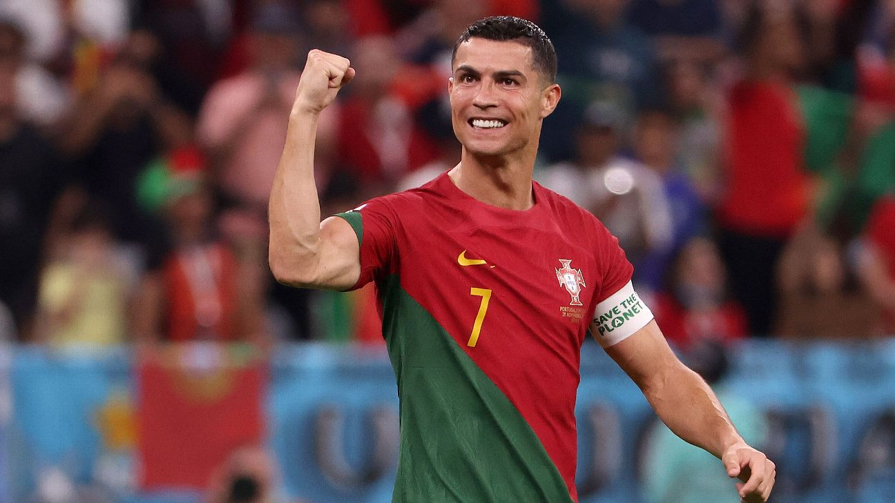

Cristiano RonaldoCristiano Ronaldo dos Santos Aveiro GOIH ComM (Portuguese pronunciation:
kɾiʃtjɐnu ʁɔnaldu]; born 5 February 1985) is a Portuguese professional footballer who plays as a forward for and captains both Saudi
Pro League club Al Nassr and the Portugal national team. Widely regarded as one of the greatest players of all time, Ronaldo has won five Ballon d'Or awards,[note 3] a record three UEFA Best Player in Europe, and four European Golden Shoes, the most by a European player. He has won 34 trophies in his career, including seven league titles, five UEFA Champions Leagues, the UEFA European Championship and the UEFA Nations League. Ronaldo holds the records for most appearances (183), goals (140) and assists (42) in the Champions League, goals in the European Championship (14), international goals (127) and international appearances (203). He is one of the few players to have made over
1,200 professional career appearances, and has scored
over 850 official senior career goals for club and country, making him the top goalscorer of all time.Ronaldo began his senior career with Sporting CP, before signing with Manchester United in 2003, winning the FA Cup in his first season. He would also go on to win three consecutive Premier League titles, the Champions League and the FIFA Club World Cup; at age 23, he won his first Ballon d'Or. Ronaldo was the subject of the then-most expensive association football transfer when he signed for Real Madrid in 2009 in a transfer worth €94 million (£80 million). He became a key contributor and formed an attacking trio with Karim Benzema and Gareth Bale which was integral to the team winning four Champions Leagues from 2014 to 2018, including La Décima. During this period, he won back-to-back Ballons d'Or in 2013 and 2014, and again in 2016 and 2017, and was runner-up three times behind Lionel Messi, his perceived career rival. He also became the club's all-time top goalscorer and the all-time top scorer in the Champions League, and finished as the competition's top scorer for six consecutive seasons between 2012 and 2018. With Real, Ronaldo won four Champions Leagues, two La Liga titles, two Copas del Rey, two UEFA Super Cups and three Club World Cups. In 2018, he signed for Juventus in a transfer worth an initial €100 million (£88 million), the most expensive transfer for an Italian club and for a player over 30 years old. He won two Serie A titles, two Supercoppa Italiana trophies and a Coppa Italia, became the inaugural Serie A Most Valuable Player and became the first footballer to finish as top scorer in the English, Spanish and Italian leagues. He returned to Manchester United in 2021, finishing his only full season as
the club's top scorer, before his contract was terminated in 2022. In 2023, he signed for Al Nassr.Cristiano Ronaldo dos Santos Aveiro was born on 5 February 1985 in the São Pedro parish of Funchal, the capital of the Portuguese island of Madeira, and grew up in the nearby parish of Santo António.[10][11] He is the fourth and youngest child of Maria Dolores dos Santos Viveiros da Aveiro, a cook, and José Dinis Aveiro, a municipal gardener and part-time kit man.[12] His great-grandmother on his father's side, Isabel da Piedade, was from the island of São Vicente, Cape Verde.[13] He has one older brother, Hugo, and two older sisters, Elma and Liliana Cátia "Katia".[14] He was named after actor and U.S. President Ronald Reagan, whom his father was a fan of.[15] His mother revealed that she wanted to abort him due to poverty, his father's alcoholism, and having too many children already, but her doctor refused to perform the procedure,[16][17] as abortions were illegal in Portugal at that time.[18] Ronaldo grew up in an impoverished Roman Catholic home, sharing a room with all his siblings.[19]
As a child, Ronaldo played for Andorinha from 1992 to 1995,2 where his father was the kit man,12 and later spent two years with Nacional. In 1997, aged 12, he went on a three-day trial with Sporting CP, who signed him for a fee of £1,500.[21] He subsequently moved from Madeira to Alcochete, near Lisbon, to join Sporting's youth academy.[21] By age 14, Ronaldo believed he had the ability to play semi-professionally and agreed with his mother to cease his education to focus entirely on football.[22] With a troubled life as a student[23] and living in Lisbon area away from his Madeiran family, he did not complete schooling beyond the 6th grade.[24][25] While popular with other students at school,
he had been expelled after throwing a cRonaldo began his international career with Portugal under-15 in 2001.
During his international youth career, Ronaldo would represent the under-15, under-17, under-20, under-21 and under-23 national sides, amassing 34 youth caps and scoring 18 goals overall.[7]
Aged 18, Ronaldo made his first senior appearance for Portugal in a 10 win over Kazakhstan on 20 August 2003,357 coming on as a half-time substitute for Luís Figo.[358] He was subsequently called up for UEFA Euro 2004, held in his home country, and scored his first international goal in a 2–1 group stage loss to eventual champions Greece, his eighth appearance for Portugal.[358] After converting his penalty in a shoot-out against England in the quarter-finals,[359] he helped Portugal reach the final by scoring the opening goal in a 2–1 win over the Netherlands.
He was featured in the team of the tournament, having provided two assists in addition to his two goals.361